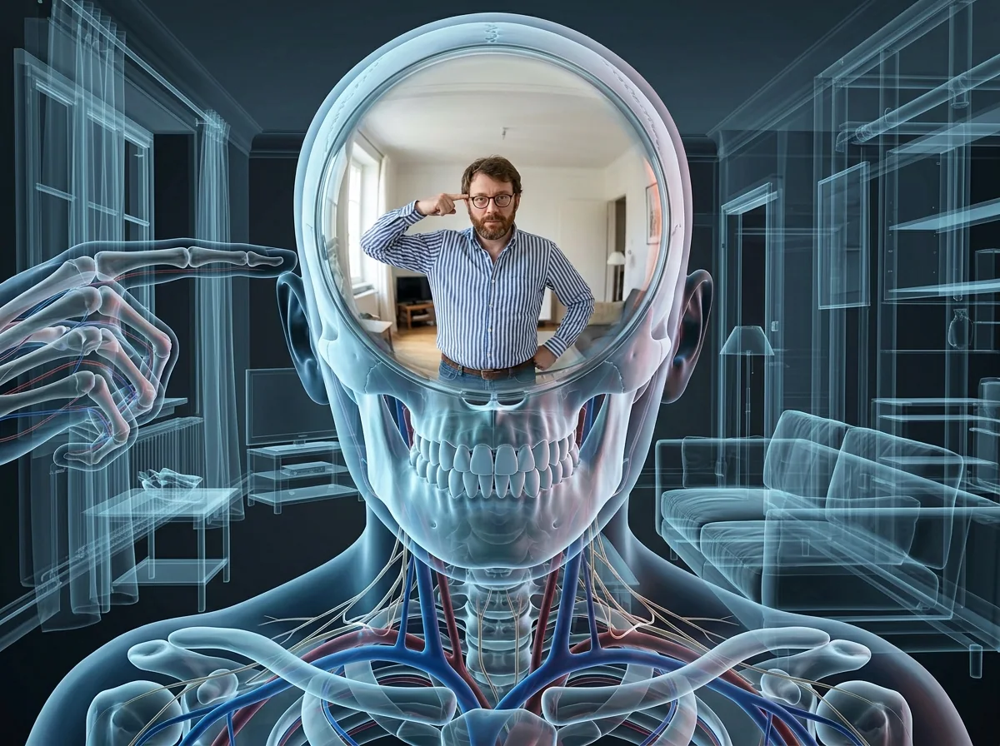
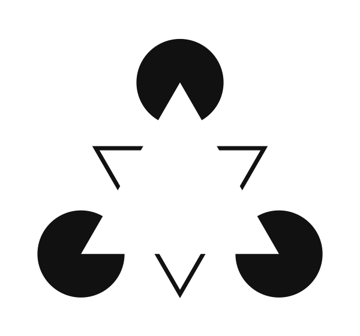
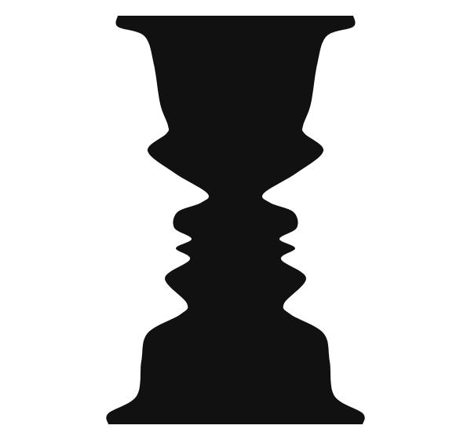
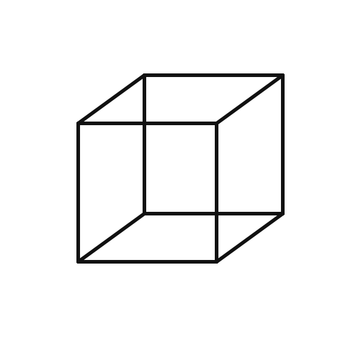
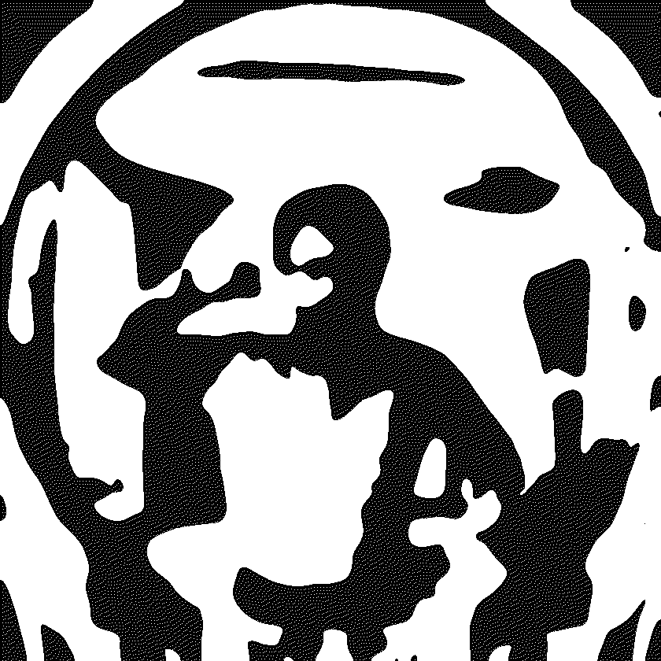
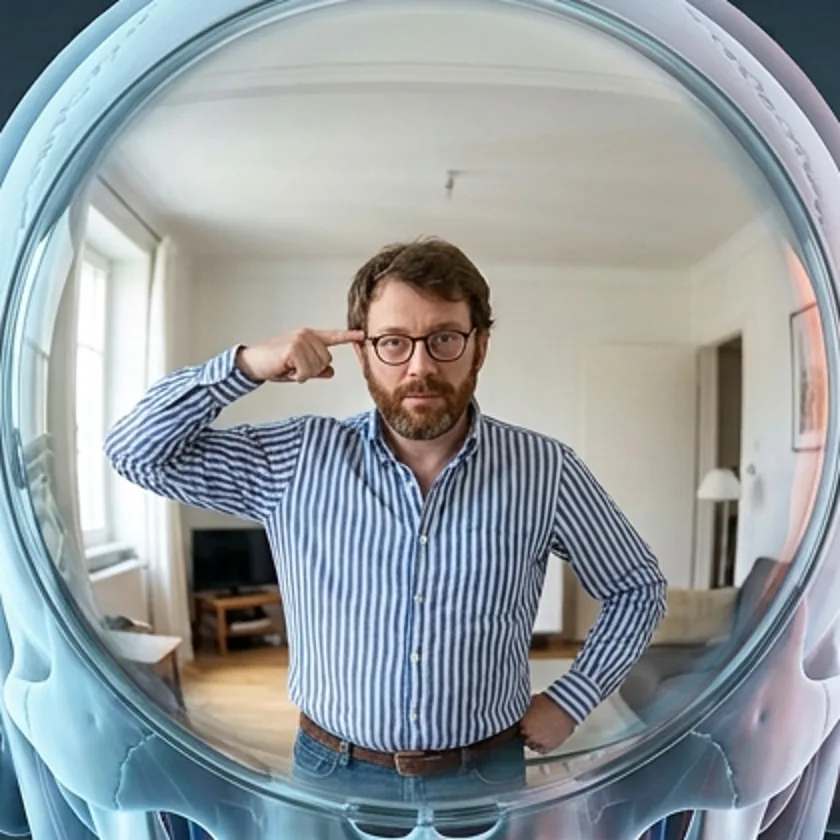
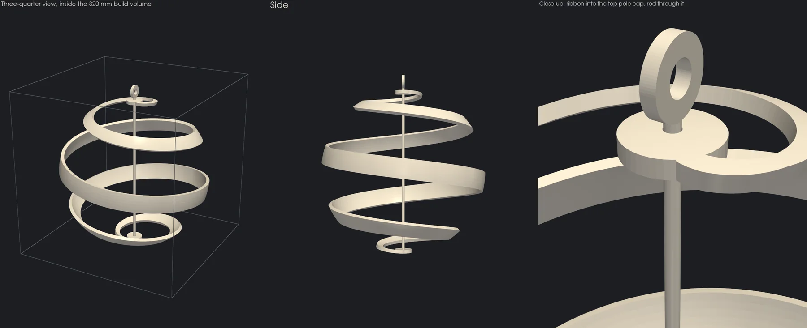

The Occulted Gestalt

Occult once meant simply hidden (Latin occultus, “covered over”), and astronomers still say the Moon occults a star. Gestalt is German for form. The occulted gestalt is the form that is fully present in your experience and absent from the light that reaches you: the edge no one drew, the surface behind the occluder, the solid nobody printed. This page looks at the machinery that makes such forms. It sets out the operations perception scientists can tell apart, lets you run two of them live, surveys how artists and swindlers have used them, and ends with four printable sculptures, ribbons wound around solids that exist only in the person looking at them. As on every page of this site, the measured and the interpreted are labeled and kept apart.
Seeing is indirect measured — perception science
The retina receives a flat, upside-down, moving, blurred, gappy pattern of light, and every such pattern is consistent with infinitely many three-dimensional scenes. This is the inverse problem of vision. Berkeley noted in 1709 that distance is not given to sight at all. Helmholtz (1867) called the solution unconscious inference: the brain settles on the scene that best explains the pattern, using what it already expects. The Gestalt psychologists (Wertheimer, 1923; Koffka, 1935) described the expectations themselves. The visual system prefers the simplest, most regular, most symmetric organisation (the law of Prägnanz), and the whole it builds is “something else than the sum of its parts” (Koffka). Modern accounts make this quantitative:
- the minimum principle (Hochberg & McAlister, 1953): pick the interpretation with the shortest description;
- the symmetry prior for recovering 3-D shape (Pizlo et al., 2014);
- predictive coding, in which the cortex sends predictions down and only the errors climb back up (Rao & Ballard, 1999).
The dissent is worth keeping in view. Gibson (1979) argued that perception is direct: the light reaching a moving observer is rich enough to specify the world without inference. Both camps agree on the phenomena below. They disagree on what to call the work.
Six constructions, one fixed stimulus measured — perception science

The Kanizsa triangle
Three black discs with a slice missing, and three black angles. That is all the ink on this plate, generated here from exact geometry. Most people see more. They see a white triangle, point up, lying on top of everything else. Its edges look crisp, and its surface often looks whiter than the page around it. But no edge is drawn: along each side the triangle's boundary is physically present only where it bites a disc, 44% of its length. Its white is the same white as the page.
Gaetano Kanizsa published figures like this in 1955. They are not a curiosity of the eye's surface. Neurons in visual area V2 of the monkey fire to such contours as they do to real ones (von der Heydt, Peterhans & Baumgartner, 1984). The figure is also two illusions at once. The edges are supplied, and so is a second, outlined triangle, pointing down and read as running on behind the white one. You complete its hidden sides too. Rotate the discs a little and the triangle dissolves; the live version further down lets you do exactly that.

Rubin's vase
One outline, two owners. Either the black vase owns the contour and the white is background, or the two white faces own it and the black falls away. You cannot hold both at once (Rubin, 1915).

Necker's cube
Twelve lines, no depth cues. The lower-left square is in front; then, without the drawing changing, the upper-right square is. Necker reported the flip in a crystal drawing in 1832.


A Dalmatian-style two-tone
Generated from the round window of the picture above: blurred, then cut to black and white. If you had not just seen the original, would you find the man pointing at his own head? Once found, try to un-see him. The classic is R. C. James's Dalmatian photograph, which is not reproduced here.
The phenomena above expose several different operations:
| Operation | Visual example | What gets constructed |
|---|---|---|
| Boundary completion | Kanizsa triangle | An edge without a corresponding local brightness boundary |
| Occlusion interpretation | Shapes continuing behind the triangle | Hidden portions of objects |
| Border assignment | Rubin's vase | Which region owns a shared outline |
| Competing interpretation | Necker cube or ambiguous figures | One dominant reading among alternatives |
| Knowledge-guided grouping | Dalmatian image | A recognizable whole from disconnected patches |
| Missing-input completion | Retinal blind spot | Continuity where the eye supplies no visual input |
These operations are supported by different experimental traditions; they should not all be reduced to one generic “brain fills gaps” explanation.
The blind spot provides the most literal missing-data case. There are no photoreceptors where the optic nerve exits the retina, yet we generally do not experience a corresponding hole—even with one eye viewing. Surrounding visual information contributes to a continuous percept.
And here is an especially unsettling experimental result: a 2017 study found that, in its particular comparison task, participants preferred a partially filled-in stimulus over a directly seen one, even though the filled-in region could conceal an interruption. The inferred continuity was treated as more reliable than it objectively was. That does not mean imagination always overrides sight; it means constructed content can arrive without a felt warning label.
The deepest distinction is this: being aware of an interpretation is not the same as seeing the underlying construction happen.
You can know the Kanizsa edges are absent, know both faces and vase are encoded, and still experience a crisp triangle or one dominant object. These images let you watch perception change its answer while the visual evidence stays fixed.
Summoning I — the edge that isn't drawn measured — computed live
A Kanizsa engine. Change how much of the boundary is inked (the support ratio), open or close the discs' mouths so the summoned edges must bend, or twist the discs out of alignment. The readouts apply Kellman & Shipley's (1991) relatability rule, which predicts when two edge fragments will be joined. Their extensions must meet in front of both fragments, bending by no more than 90°, or line up within a small tolerance. Shipley & Kellman (1992) found that the clarity of the joined edge rises with the support ratio. The dashed overlay shows where the rule predicts your contour. It is off by default, because the point is that you draw it yourself.
Summoning II — the solid that only motion draws measured — computed live
Each dot below lies on the surface of a hidden solid: the same four solids the sculptures at the bottom of this page wrap. All dots are the same size and shade, and the projection is orthographic, so a still frame says nothing about which dots are near and which are far. You can see the cloud's outline, but inside it is flat speckle. Press turn. Wallach & O'Connell (1953) named what happens the kinetic depth effect, and Ullman (1979) proved that three distinct views of four non-coplanar points already fix a rigid shape. Then shorten the dots' lives. When no dot survives long enough to be followed, the surface still stands (Treue, Husain & Andersen, 1991). Because orthographic motion carries no sign of depth, the solid may suddenly reverse its spin. That flip is your visual system choosing between two equally good answers.
Why vision completes measured — comparative evidence
An edge that isn't there sounds like a fault. The comparative evidence suggests these constructions are the working parts of a system built to find objects in cluttered, half-hidden scenes. They are shaped by learning as well as by evolution, and they are not the same in every species.
Human perception also depends on learning. The Dalmatian illusion shows how acquiring an interpretation can reorganize previously meaningless patches into a recognizable object.
Prior knowledge changes what becomes perceptually available.
That helps explain why a particular ambiguous image can exploit both broadly shared visual organization and familiar human meanings. The boundary-assignment problem is basic; identifying a particular configuration as a vase, a letter, or a familiar animal also depends on recognition and experience.
Humans are not the endpoint of a universally superior visual system. For example, many birds have four cone types and sensitivity extending into ultraviolet, whereas our color vision has a different sampling system. Their perceptual world—and the camouflage effective against them—differs from ours.
What we can actually conclude
One entry below is not demonstrated above. In binocular rivalry, each eye is shown a different image. Perception does not blend the two: it alternates between them, and the stimulus never changes (Wheatstone, 1838). For the phenomena on this page, the evolutionary interpretation is strongest when stated this way:
| Phenomenon | Likely useful underlying function | Important limitation |
|---|---|---|
| Missing-line completion | Recovering object boundaries from incomplete evidence | An illusory edge is not proof of the exact ancestral mechanism |
| Objects continuing behind obstacles | Recognizing partly occluded objects | Animal performance does not reveal subjective experience directly |
| Figure–ground assignment | Separating objects and overlapping surfaces | Rubin's vase is an artificial ambiguity, not the original ecological problem |
| Binocular rivalry | Resolving incompatible input within binocular vision | Rivalry itself need not be an adaptation |
| Knowledge-guided recognition | Using experience to organize ambiguous visual input | The contribution of learning varies across tasks and species |
These interpretations are grounded in comparative completion studies, border-ownership research, binocular-vision research, and studies of prior knowledge. Some representative examples:
- newly hatched chicks complete partly hidden objects (Regolin & Vallortigara, 1995);
- barn owls see illusory contours (Nieder & Wagner, 1999);
- single cells in monkey visual cortex signal which side of an edge owns it (Zhou, Friedman & von der Heydt, 2000);
- rivalry has been studied for nearly two centuries (Blake & Logothetis, 2002);
- one moment of insight into a two-tone image can still be recalled a week later (Ludmer, Dudai & Rubin, 2011).
The window — where the eye cuts the spectrum measured — computed live
Everything above happens inside a narrower limit still. The electromagnetic spectrum runs continuously from radio waves to gamma rays. “Visible light” is not a kind of light: it is the band that one particular instrument, the human eye, happens to admit. The conventional limits of about 380 and 780 nm span almost exactly one octave of frequency. The two edges are made by different machinery, and neither one is a wall.
The violet edge is the lens
The cornea absorbs nearly all ultraviolet below about 295 nm. The crystalline lens takes most of the rest, with yellow UV filters derived from kynurenine. In the standard 32-year-old eye it passes 55% of the light at 450 nm, 19% at 420, 1.7% at 400 and 0.3% at 390. Lens density keeps rising through life (Pokorny, Smith & Lutze, 1987), so an older eye sees a dimmer, yellower violet. Press removed. Without a lens, as after cataract surgery before UV-blocking implants, the cones answer well into the ultraviolet (Wald, 1952). There, all three pigments respond through their secondary β-band, so ultraviolet is reported as a whitish violet.
The filter has plausible reasons. Ultraviolet is photochemically harmful to the retina, and it would blur the image: the eye's focus already shifts by about 2 dioptres across the visible band (Thibos et al., 1992). Over the fovea a second, local filter sits on top of the lens. The macular pigment (lutein and zeaxanthin) passes only 44% near 460 nm, where it absorbs most. Switch to periphery to remove it. You can even see this filter: Maxwell's spot is its shadow.
The red edge is the pigment
Nothing in the eye's optics stops near 700 nm. The cornea, lens and humours stay clear far into the near-infrared, which is why laser-safety standards define a retinal hazard region of 400–1400 nm: an infrared beam can burn a retina without ever being seen. On this side the limit is the photopigment. The energy of a photon falls as wavelength rises, and sensitivity drops about tenfold every 30 nm. In the measured luminosity function it is 1% of peak at 685 nm, 0.01% at 747, and 0.001% at 780, which is where the conventional limit sits. With enough light the edge moves. People detect infrared to beyond 1000 nm (Griffin, Hubbard & Wald, 1947), and short infrared pulses near 1000 nm are seen as a visible colour. Two photons are absorbed at once, adding up to the energy of one photon at half the wavelength (Palczewska et al., 2014). Drag the cursor to 1000 nm and read the price.
Why the pigments stop where they do is an evolutionary reading, plausible rather than proven. A pigment tuned further into the red needs less energy to trigger, so it also triggers more often from heat alone, and fires in the dark (Barlow, 1957). A warm body glows most strongly near 9 µm, so an eye sensitive far into the infrared would see its own warmth. Vision also began in water, which is transparent only in a narrow band that is clearest in the blue (Pope & Fry, 1997).
Inside the window, three samples
Within the band the eye does not measure a spectrum. Three cone types report one number each, and any two lights that produce the same three numbers look identical. These are metamers: physically different light, perceptually the same colour. Colour is therefore a construction from three samples. It holds the purest occulted gestalt of all, purple. No single wavelength produces it. It is what the visual system makes of long and short wavelengths together with no middle, and it closes the hue circle over a gap in the spectrum where there is no light to see.
Colours that are not in the light
Purple is made from light that exists. Some colours are made from no light at all, or from a signal that no light can produce.
- stygian blue, a blue as dark as black;
- self-luminous red, a red brighter than the white it sits on;
- hyperbolic orange, an orange more saturated than any orange in the spectrum.
Exploitations for artistic shape summoning measured — precedents
Every operation above is a lever an artist can pull. The craft is in withholding: give the visual system exactly the evidence that makes one construction irresistible, and leave out everything that construction will supply. The catalogue below pairs each lever with the capacity it borrows, what the artist leaves out, and the precedents. The last column notes where the Negative Space series uses it. Art and fraud pull the same levers; the difference, as the case files further down show, is disclosure.
| Lever | Capacity borrowed | What is withheld | Precedent | In this series |
|---|---|---|---|---|
| The implied edge | Boundary completion | The edge itself: only aligned terminators remain | Kanizsa's figures (1955) | Pyramid and cube edges are inked only where the band creases across them |
| The implied surface | Occlusion interpretation; Prägnanz | The surface between samples | Calder's wire figures (from 1926); Naum Gabo's string constructions (1940s) | Every piece: 66–75% of each hidden surface is never printed |
| Form from motion | Kinetic depth; Musatti's stereokinetic effect (1924) | Every static depth cue | Duchamp's Rotoreliefs (1935) | The hanging pieces turn in room air; a walking viewer does the rest |
| The one true vantage | The inverse problem, resolved from one point only | Every other viewpoint | Holbein's anamorphic skull in The Ambassadors (1533); Felice Varini's architectural paintings | Straight down its vertical diagonal, the tilted cube's outline is a regular hexagon |
| Figure–ground reversal | Border assignment | Which side owns the contour | Rubin (1915); Escher's tessellations | Is the ribbon the figure, or the gap between its turns? |
| The bistable solid | Competing interpretation | Depth order | Necker (1832); Josef Albers' Structural Constellations (1950s) | A hexagon with a Y inside is a cube seen from above, or from below |
| Prior over evidence | Knowledge outvotes stereo | The true sign of depth | Gregory's hollow face (1970); Patrick Hughes's reverspectives | — |
| Patches, not outlines | Knowledge-guided grouping | Every contour | R. C. James's Dalmatian; Mooney's two-tone faces (1957) | — |
| The shadow is the work | Projection read as object | A legible object | Shigeo Fukuda's Lunch with a Helmet On (1987); Tim Noble & Sue Webster | Proposed: a lamp on the axis to throw the year onto the walls |
| Beyond the window | The lens's ultraviolet edge; paint's transparency in the infrared | The image itself, kept in light the eye cannot use | Day-Glo fluorescent paints (the Switzer brothers, 1930s); infrared reflectography of underdrawings (van Asperen de Boer, 1968) | Proposed: a fluorescent ribbon under a 365 nm lamp in a dark room, glowing with no visible means of support |
| The isoluminant edge | Colour and brightness travel partly separate paths | Luminance contrast; only hue differs | Monet's Impression, Sunrise (1872), whose sun matches the sky's luminance (Livingstone, 2002) | — |
| The afterimage | Opponent colour coding, fatigued | The colour itself: it is never on the canvas | Jasper Johns, Flag (1965); Josef Albers, Interaction of Color (1963) | — |
| The metamer | Colour from three samples | The spectral difference | Metameric security inks that match under one light and part under another | — |
| The cast void | Absence made present | The object; only its hollow remains | Rachel Whiteread's House (1993) | The inverse strategy: Whiteread casts the absence; these pieces outline it |
The Negative Space series — four occulted solids measured — as built
One year, wound as a spiral ribbon around a solid that is never printed. The year starts at the top on January 1 and descends. The band is 6 mm PETG throughout. A rod with a hanging eye passes through the two caps. Each ribbon is a single watertight body of genus 2, the rod's bore through both caps, and fits a 320 mm bed. Drag to orbit, scroll or pinch to zoom, and press summon to see what you were already seeing.

Studio findings — where summoning holds and where it breaks measured — from the build
Building these pieces turned out to be a series of small perception experiments. Four results:
The same tendencies, exploited documented cases
People exploit these tendencies mainly by controlling what becomes noticeable, what gets treated as background, and what you infer from incomplete evidence. The strongest documented examples are deceptive interface design and manufactured visual “proof”—not hidden images that reliably take control of someone's mind. ftc
One important distinction: a Kanizsa triangle demonstrates visual completion, but it does not establish that someone can use missing lines to implant beliefs. Commercial exploitation more often combines visual attention, familiar appearances, and misleading context. ftc
1. Making the costly choice foreground
A website can make its profitable option look like the obvious next action while making alternatives look like unimportant background: a prominent subscription button, a subdued opt-out, or a cancellation link buried among dense text. This is called a dark pattern when the design steers people against their intentions. ftc
The connection to the figure–ground examples above is useful but not exact: Rubin's vase changes which region you perceive as an object; a deceptive interface changes which information receives your attention and seems actionable. It is not necessarily inducing the same perceptual reversal. ftc
Real case: ABCmouse, 2020
The FTC alleged that ABCmouse concealed automatic renewal information in linked terms and made cancellation difficult to find and complete. Commissioner Rohit Chopra specifically described visual misdirection, hidden alternatives, and confusing language as forms of “online sleight of hand.” His statement noted that in 2017, ABCmouse made an already-buried cancellation-policy link less prominent. ftc
The company reached a $10 million settlement in 2020. The gain was continued subscription revenue, including charges to consumers who had attempted to cancel—not merely increased brand recognition. olshanlaw
The exploit is: “It was technically on the page” does not mean it was meaningfully presented.
2. Letting appearance supply missing meaning
Another tactic is to make something resemble a familiar category while withholding information that would change your interpretation.
The FTC's discussion of dark patterns includes disguised advertisements, similarly styled buttons with different meanings, and confusing checkbox language. A viewer may recognize the familiar presentation and act before carefully resolving what it actually does. olshanlaw
For example, when an advertisement is presented as ordinary content, the important missing distinction is not a line segment. It is the commercial relationship: someone paid for you to see this. The surrounding presentation encourages the viewer to supply the interpretation “normal content” rather than “sales message.” Disguised advertising is among the practices identified in the FTC discussion. olshanlaw
This is the practical version of the worry that the mind's eye runs an exploitable algorithm: a recognizable surface can encourage an interpretation that the underlying facts do not justify.
3. Selling ambiguous images as proof
Here the connection becomes more directly visual: an image contains something faint, incomplete, or difficult to identify, and a seller supplies the interpretation.
Real case: William H. Mumler
In the nineteenth century, photographer William H. Mumler sold photographs that he claimed included spirits of the dead. He faced fraud charges in New York in 1869. The prosecution showed that the same supposed spirit appeared in photographs taken in different cities—and that the “spirit” was a living person. The judge nevertheless dropped the charges for lack of sufficient evidence. photographymuseum
Double exposure can produce a faint, semitransparent human image that appears otherworldly. Historical accounts connect this photographic effect with the emergence of spirit photography. jstor
There are two layers of deception here:
- Manufactured evidence: An extra image is physically present in the photograph.
- Supplied meaning: The seller identifies that image as a deceased person or supernatural presence.
That is not the eye literally inventing the entire figure. It is an optical artifact plus an interpretation sold as fact. Mumler's customers were paying for photographs purported to demonstrate contact with spirits. photographymuseum
The relevant perceptual parallel is the Dalmatian image: once an interpretation organizes ambiguous visual material, it can become compelling. But recognizing a meaningful shape does not independently verify the claimed identity or cause of that shape. michaelbach
4. Selling fear of hidden messages
Sometimes the profitable deception is the claim that perception can be manipulated—not a successful manipulation technique.
Real case: James Vicary, 1957
American market researcher James Vicary claimed in 1957 that briefly flashing “Eat Popcorn” and “Drink Coca-Cola” during a film produced dramatic sales increases. The supposed demonstration became foundational to popular fears about subliminal advertising. bbc
The results were not substantiated. A historical account in Scientific American states that he admitted five years later that he had faked the study. scientificamerican
This matters for negative-space images and alleged hidden symbols: finding an embedded image does not prove that it changes purchasing behavior, sexual desire, or political beliefs. A review of the history distinguishes evidence that people can respond to some stimuli outside awareness from evidence that subliminal advertising delivers the sweeping effects claimed for it. muse.jhu
So there are two separate questions:
- Is another image or message actually present?
- Is there credible evidence that its presence causes the claimed behavior?
The first can be demonstrated visually. It does not answer the second. muse.jhu
5. How to recognize the exploit
The most useful defensive move is to separate what is visible, what you inferred, and what someone wants that inference to make you do.
| Situation | Question that breaks the spell |
|---|---|
| A bright purchase button and a faint alternative | What are all the available choices, including the visually quiet ones? |
| A subscription presented as a limited membership | What is the renewal schedule, total cost, and cancellation process? |
| A faint face, apparition, or hidden symbol | What is physically in the image, and what identity or explanation was suggested to me? |
| A claim about subliminal influence | Where is the evidence of a behavioral effect—not merely evidence of a hidden picture? |
| A convincing interpretation of ambiguous patches | Can I describe the marks without naming the object I was told to see? |
These checks target the documented problems of hidden alternatives, obscured renewal terms, manufactured photographic evidence, and unsupported subliminal claims. ftc
The central vulnerability is not that people are foolish. It is that perceptual fluency can feel like certainty: once something looks like the obvious button, a recognizable face, or meaningful evidence, checking the alternative explanation takes additional effort. The clearest financial exploitation occurs when someone deliberately structures the presentation so that your easiest interpretation is also their most profitable one. ftc
The hermetic reading interpretation — not physics
The second voice makes no claim on the first. Perception science does not need the tradition's blessing, and the tradition does not need a laboratory's proof. They are two lanterns held up to one empty space.
Read through the first Hermetic principle, the picture at the top of this page is a diagram of Mentalism. The world outside the skull is all outline. The world anyone has ever lived in is the furnished room within. The sculptures make the principle something you can hold. Their solid is a mental object: real in experience, absent in matter, and identical for everyone who looks, because everyone carries the same priors. In the tradition's own word, the form is occult. It is not secret. It is covered, and the viewer's own seeing is what uncovers it.
Plato gives the same thought a geometry. No one has ever seen a perfect sphere. Every sphere you have met was summoned from a lumpy, partial, shadowed approximation, and the Meno calls the faculty that completes it anamnesis, the soul recollecting a Form it never saw with the eyes. The Timaeus gives the world itself the shape of a sphere, the figure most like itself. It assigns the cube to earth and the icosahedron to water. So the series wraps one year around the cosmos, around water, around earth stood on its point, and around the pyramid whose faces hold the golden ratio.
Plato's cave runs the other way. Its prisoners mistake shadows for things. Here the thing is withheld on purpose and only its trace is offered, and the Form the viewer completes is truer than any plastic could be. The Tao Te Ching puts it most plainly: the use of the vessel is its emptiness. The year is real. What holds it together is a shape that exists only in whoever is looking.
The Kybalion's Principle of Vibration, “Nothing rests; everything moves; everything vibrates,” reads the spectral window the same way. One octave of a continuous vibration is given to us as light and colour. The rest of the keyboard, from radio to gamma, passes through and around us unseen: occulted in the oldest sense, covered rather than absent.
A contemplative use
- Stand where the piece reads as a tangle of strips. Notice that this is a true description of the plastic.
- Walk slowly around it until the solid arrives, and note the moment. Nothing in the object changed.
- Try to un-see it. Notice how little control you have over a construction you know to be yours.
- Turn the same attention outward. In the room around you, which edges, surfaces and meanings are you completing right now?
- Then ask the question from the case files: who benefits from what I complete? In art the answer is the viewer, and the trick is shown. That is the line between summoning and sleight of hand.
Sources measured
- Berkeley, G. (1709). An Essay Towards a New Theory of Vision.
- von Helmholtz, H. (1867). Handbuch der physiologischen Optik, vol. 3.
- Wertheimer, M. (1923). Untersuchungen zur Lehre von der Gestalt II. Psychologische Forschung 4. · Koffka, K. (1935). Principles of Gestalt Psychology.
- Hochberg, J. & McAlister, E. (1953). A quantitative approach to figural “goodness”. J. Exp. Psychol. 46.
- Pizlo, Z., Li, Y., Sawada, T. & Steinman, R. M. (2014). Making a Machine That Sees Like Us. Oxford UP.
- Rao, R. P. N. & Ballard, D. H. (1999). Predictive coding in the visual cortex. Nature Neuroscience 2.
- Gibson, J. J. (1979). The Ecological Approach to Visual Perception.
- Kanizsa, G. (1955). Margini quasi-percettivi in campi con stimolazione omogenea. Rivista di Psicologia 49.
- von der Heydt, R., Peterhans, E. & Baumgartner, G. (1984). Illusory contours and cortical neuron responses. Science 224.
- Kellman, P. J. & Shipley, T. F. (1991). A theory of visual interpolation in object perception. Cognitive Psychology 23. · Shipley, T. F. & Kellman, P. J. (1992). Strength of visual interpolation depends on the ratio of physically specified to total edge length. Perception & Psychophysics 52.
- Michotte, A., Thinès, G. & Crabbé, G. (1964). Les compléments amodaux des structures perceptives.
- Rubin, E. (1915). Synsoplevede Figurer. · Necker, L. A. (1832). London and Edinburgh Philosophical Magazine 1.
- Mooney, C. M. (1957). Age in the development of closure ability in children. Canadian J. Psychol. 11.
- Ehinger, B. V., Häusser, K., Ossandón, J. P. & König, P. (2017). Humans treat unreliable filled-in percepts as more real than veridical ones. eLife 6:e21761.
- Wallach, H. & O'Connell, D. N. (1953). The kinetic depth effect. J. Exp. Psychol. 45. · Ullman, S. (1979). The Interpretation of Visual Motion. MIT Press. · Treue, S., Husain, M. & Andersen, R. A. (1991). Human perception of structure from motion. Vision Research 31.
- Comparative and evolutionary: Regolin, L. & Vallortigara, G. (1995). Perception of partly occluded objects by young chicks. Perception & Psychophysics 57. · Nieder, A. & Wagner, H. (1999). Perception and neuronal coding of subjective contours in the owl. Nature Neuroscience 2. · Zhou, H., Friedman, H. S. & von der Heydt, R. (2000). Coding of border ownership in monkey visual cortex. J. Neurosci. 20. · Wheatstone, C. (1838). On some remarkable, and hitherto unobserved, phenomena of binocular vision. Phil. Trans. R. Soc. 128. · Blake, R. & Logothetis, N. K. (2002). Visual competition. Nature Reviews Neuroscience 3. · Ludmer, R., Dudai, Y. & Rubin, N. (2011). Uncovering camouflage: amygdala activation predicts long-term memory of induced perceptual insight. Neuron 69. · Cuthill, I. C. et al. (2000). Ultraviolet vision in birds. Advances in the Study of Behavior 29.
- Gregory, R. L. (1970). The Intelligent Eye. · Stevens, K. A. (1981). The visual interpretation of surface contours. Artificial Intelligence 17.
- Spectral window: Stockman, A. & Sharpe, L. T. (2000). The spectral sensitivities of the middle- and long-wavelength-sensitive cones derived from measurements in observers of known genotype. Vision Research 40 — with their lens and macular density spectra and the CIE 2008 luminosity function, from the CVRL database. · Govardovskii, V. I. et al. (2000). In search of the visual pigment template. Visual Neuroscience 17. · Wyszecki, G. & Stiles, W. S. (1982). Color Science, 2nd ed. · Pokorny, J., Smith, V. C. & Lutze, M. (1987). Aging of the human lens. Applied Optics 26. · Wald, G. (1952). Alleged effects of the near ultraviolet on human vision. JOSA 42. · Griffin, D. R., Hubbard, R. & Wald, G. (1947). The sensitivity of the human eye to infra-red radiation. JOSA 37. · Palczewska, G. et al. (2014). Human infrared vision is triggered by two-photon chromophore isomerization. PNAS 111. · Barlow, H. B. (1957). Purkinje shift and retinal noise. Nature 179. · Pope, R. M. & Fry, E. S. (1997). Absorption spectrum (380–700 nm) of pure water. Applied Optics 36. · Thibos, L. N. et al. (1992). The chromatic eye. Applied Optics 31. · Segelstein, D. J. (1981). The complex refractive index of water, MSc thesis, University of Missouri–Kansas City, via the CC0 refractiveindex.info database.
- Colours not in the light: Fong, J. et al. (2025). Novel color via stimulation of individual photoreceptors at population scale. Science Advances 11. · Churchland, P. M. (2005). Chimerical colors: some phenomenological predictions from cognitive neuroscience. Philosophical Psychology 18. · Crane, H. D. & Piantanida, T. P. (1983). On seeing reddish green and yellowish blue. Science 221. · Billock, V. A., Gleason, G. A. & Tsou, B. H. (2001). Perception of forbidden colors in retinally stabilized equiluminant images. JOSA A 18. · Hsieh, P.-J. & Tse, P. U. (2006). Illusory color mixing upon perceptual fading and filling-in does not result in “forbidden colors”. Vision Research 46. · Metamers: ITU-R BT.2020 primaries; CIE 2012 2° XYZ from the CIE 2006 cone fundamentals (cvrl.org).
- Art and light: Livingstone, M. (2002). Vision and Art: The Biology of Seeing. · van Asperen de Boer, J. R. J. (1968). Infrared reflectography. Applied Optics 7.
- Case files: FTC statement of Commissioner Chopra on ABCmouse; Olshan Frome Wolosky, Dark patterns; Photography Museum, Mumler; JSTOR Daily; BBC; Scientific American; Project MUSE — linked inline.
- Spectral chart:
projects/indirect-perception/spectral_window.pyfits the pigment template to the measured cones and writes the data inlined in this page. - Sculptures: generators in
projects/negative-space/(manifold3d, trimesh); coverage = ribbon area lying on the hidden surface ÷ that surface's area, measured from the printed STLs.